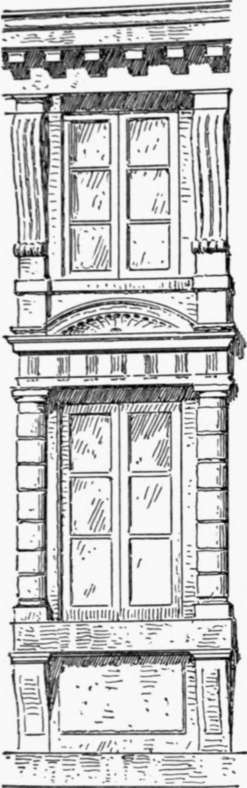
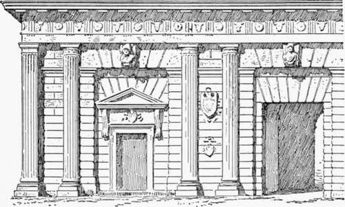
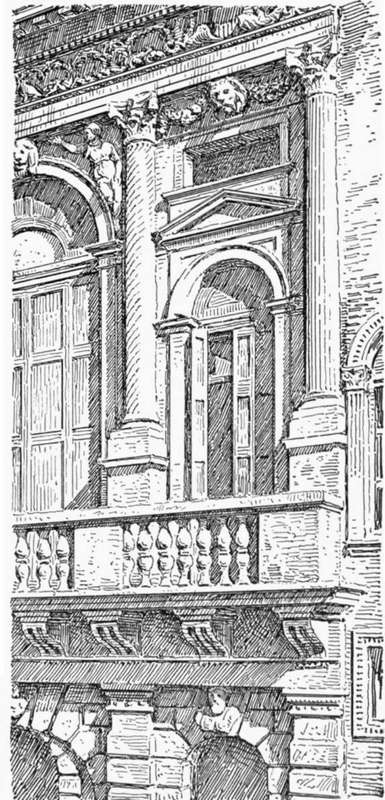

Palace Architecture Of The Roman Renaissance. Part 4
Description
This section is from the book "Character Of Renaissance Architecture", by Charles Herbert Moore. Also available from Amazon: Character of Renaissance Architecture.
Palace Architecture Of The Roman Renaissance. Part 4
The order is made lower and the attic higher. The Arch of Titus is the finest in proportions of all the Roman triumphal arches, and the grandest in monumental simplicity. Sansovino's changes and ornamental additions spoil the composition, and do not fit the design for the building to which it is attached. Such a design could not have any proper relationship to such a building. To attach any sort of a Roman triumphal arch scheme to the base of a mediaeval tower is an architectural absurdity.
In the scheme of the Palazzo Cor-naro an Ionic order and a Corinthian order frame in the round-headed windows of the upper stories. The columns of these orders are set in pairs, each pair having a plinth and pedestal in common. On the side walls of the building these orders are returned to the extent of one bay, which brings four columns together at the angles with clumsy effect. The frieze of the uppermost entablature is widened, as in the Library of St. Mark, but its surface is plain save for a series of oval openings which light a low attic. The high rusticated basement, which includes a mezzanine, has square-headed windows framed by a rusticated Doric order resting on a projecting sill supported on plain consoles; and over each of these a low rectangular window, flanked by elongated consoles on square blocks set upon the entablature of the window below, lights the mezzanine. A curved pediment over each of the lower windows, between the blocks that support the flanking members of the windows above, gives further awkwardness to the total scheme (Fig. 69). Barbaric compositions such as this were now to become of frequent occurrence in the architecture of the later Renaissance. While the designers were eliminating the mediaeval forms more completely than their predecessors had done, they were at the same time departing more widely from classic models, and introducing many monstrosities of composition, from the influence of which modern art has greatly suffered.
Fig. 69. — Palazzo Cornaro.
The works of Sanmichele show an equally exclusive employment of classic features, with the same freedom in deforming them and using them in novel and ungainly ways. In the Porta del Palio of Verona, a characteristic example of his work, he has used a pseudo-Doric order in which the columns are fluted after the Ionic manner with fillets between the channels, and are raised on heavy square plinths. The columns are disposed in pairs, dividing the facade into three wide intervals and four narrow ones (Fig. 70), and each wide space has a large rectangular recess spanned by a flat arch, with a sculptured keystone in the form of a console, under the entablature of the order. At the level of the soffit of this arch the wall is crowned by a cornice passing behind the columns. The central bay has a large rectangular portal without jamb mouldings, and in each lateral bay is, a small doorway framed with classic jamb mouldings and a pediment on consoles. Over each of these openings is a secondary flat arch with deep voussoirs reaching to the soffit of the upper one. Pilasters take the place of columns on the angles of the fagade, and the walls are rusticated. In the fagade of the opposite side the scheme is varied, and is plainer. The columns of the order are disposed as before, but instead of being fluted they are rusticated like the walls, and have no bases, while a large round-arched opening, with impost mouldings and a plain keystone, fills each wide interval.
Fig. 70. — Two bays of the Porta del Palio.
Of Sanmichele's palace fronts the best in Verona is, I think, that of the Palazzo Canossa, where over a high rusticated basement he has placed a shallow order of Corinthian pilasters in pairs, set close together, on a podium with ressauts. This order embraces both the principal floor and a low story above it, and has considerable elegance. The effect of the whole front is broad and quiet, save for the heavy balustrade with showy statues which crowns it. It will be seen, as we pass in review these different compositions, that the range of eccentricities of design embodied in them is as great as we find in the works of the earlier Renaissance, though they show fewer mediaeval characteristics. The Palazzo Pompei alia Vittoria, also by Sanmichele, for instance, has a Doric order over a plain rusticated basement, like that of the Porta del Palio, but with the columns equally spaced, except that the central intercolumnia-tion is made wider than the others in conformity with the width of the portal beneath it, and a pilaster is coupled with a column on each angle. Plain round-arched windows occupy the intervals between the columns, and a corbel in the form of a sculptured head is set under the entablature of the order over the crown of each arch. The plain windows of the basement have clumsy rectangular sills on consoles.
A more elaborate design by the same architect is that of the front of the Palazzo Bevilacqua (Fig. 71). Here an order of rusticated Doric pilasters, supporting an entablature with channelled consoles in the place of triglyphs, and a cornice surmounted with a balustrade forming a balcony to the story above, divides the basement wall into alternately wide and narrow bays. A round-arched window in each bay has a heavy keystone in the form of a sculptured bust, which forms at the same time a corbel to the entablature. The unequal spacing of the pilasters leads to an awkward irregularity in the spacing of the channelled consoles which do duty as triglyphs in the frieze. One of them is set over the centre of each pilaster, and the spaces over the wide intervals each give place to three of them, while over the narrow intervals there is too much room for one and not enough for two. The designer has chosen to have but one, and the effect of the resulting wider spacing over the narrow bays is both unpleasant and unclassic. The upper story has a still more barocco character. A Corinthian order with columns of alternately straight and spiral channelling, spaced in conformity with the pilasters of the basement and raised on pedestals, frames in a series of round - arched windows which are alternately large and small in correspondence with the magnitudes of the intervals. The window of each wide bay nearly fills the space enclosed by the order, and a keystone in the arch forms a corbel to the entablature, while the spandrels are adorned with sculptures in high relief after the manner of those of the Roman triumphal arches. Over the smaller arch in each narrow bay the spandrels are in relief and are crowned with a pediment surmounted by a horizontal cornice on a shallow ressaut corresponding to that of the spandrels, while over all this a plain oblong rectangular opening lights a low top story which is not otherwise expressed in the composition. In these narrow bays the corbels are introduced under the entablature as in the wider ones, and carved festoons fill the spaces between them and the capitals on either side. It is a capricious scheme, by which the designer has sought to quicken the jaded sensibilities of people surfeited with architectural aberrations. Of course the arrangement of these elements is based-on a certain rhythmical order which often appears to be thought a sufficient justification of such meaningless compositions; but order and rhythm do not alone constitute a fine work of art.
Fig. 71. — Palazzo Bevilacqua.
Continue to:
- prev: Palace Architecture Of The Roman Renaissance. Part 3
- Table of Contents
- next: Palace Architecture Of The Roman Renaissance. Part 5